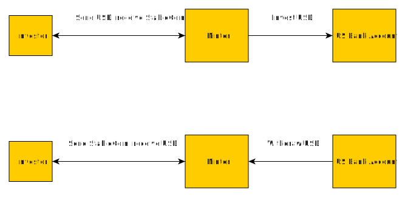
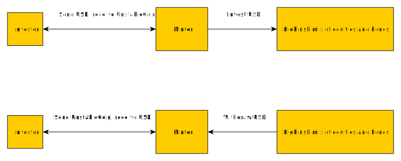
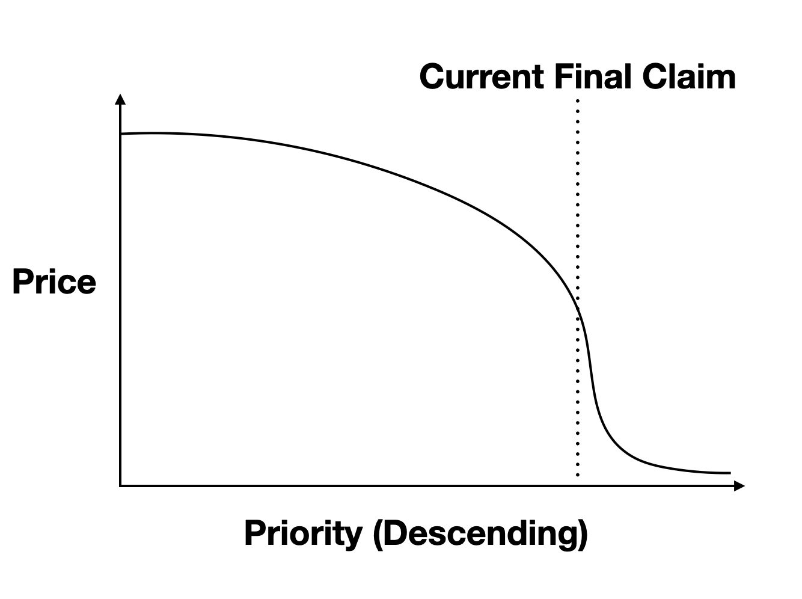

ClaimCoin
Dec 13, 2021 18:16 · 1200 words · 6 minute read
(This is not investment advice.)
Stable coins are an important tool, allowing investors to trade ordinary (fiat) currencies on the blockchain, but they have a somewhat opaque risk structure. Usually either the coin tracks the desired currency or else the peg fails, in which case investors start withdrawing and the coin suddenly trades well below the peg.
What if there was a coin with a more transparent risk structure? What would that make possible? Here I’ll outline a proposal for a more transparent form of stable coin where the risk structure is immediately and constantly clear to all investors, and where deviations from the peg are gradual, rather than sudden.
Stable Coins
A stable coin is a claim on some underlying assets. The implied promise behind the word ‘stable’ is that those assets will always be worth at least as much as some regular currency. In the simplest case, the operation of a hypothetical StableCoin could look something like this:
Here’s I’ve chosen US dollars (USD) as the regular currency that the coin tracks. In this case tracking the dollar is easy: StableCoin is fully backed by dollars in a bank account! In the event that the bank goes under, those dollars are insured by the US federal government through the FDIC, so the risk is quite low.
What does the Minter get out of it? They typically keep some or all of the interest paid on their deposits, effectively taking that as a fee in exchange for managing the coin.
Unfortunately most stable coins do not look like this. Because the interest paid on bank deposits is low at the moment, most stable coins look more like UnstableCoin:
UnstableCoin is great for Minters! The underlying assets are risky, so they generally have higher returns than bank deposits. This let’s the Minter take a larger fee. Unfortunately for investors the underlying assets are risky, so it is possible for the investment pool to fall below the promised value of UnstableCoin claims.
When this happens the coin can rather suddenly collapse. Analogous to a bank run, investors note that the investment pool is worth less than the total of claims outstanding. That means not all investors can have their claims fulfilled; the last investors to try to withdraw end up with nothing, so there’s a rush to withdraw. All of a sudden the peg collapses and the coin is worthless.
What’s the problem?
The existence of bank runs is obviously a bug in StableCoins, but it is a subtle one. The problem is not that the investment pool can drop below the value of outstanding claims. That’s true for all but the riskiest assets, and there are good reasons to want StableCoins backed by risky assets (e.g. yield).
Rather the problem is that the mechanism for deciding which claims are paid out is based on time of withdrawal, which creates an unstable equilibrium. When the pool is valued above the claims the system is in a stable equilibrium where investors are happy to hold their coins. When the pool is valued below the claims the only stable equilibrium is one where as many investors as possible have their claims fulfilled, the asset pool is empty, and the coin is worthless.
The solution to this is to provide a different approach for deciding which claims get paid out, which is where ClaimCoin comes in.
ClaimCoin
ClaimCoin is a hypothetical stable coin with the following properties:
- Each coin is a claim of $1 on an underlying pool of assets.
- The coins are non-fungible. In particular each coin has a priority, which is an integer between 1 and N, where N is the number of minted coins.
- Only the outstanding coin with the highest priority can be redeemed at any given time.
- The Minter can only mint coins with lower priority than the lowest outstanding coin.
Investors may trade ClaimCoins with different priorities, but they don’t need to be valued equally! Claim 1 is less risky than claim 2 but is a claim for the same $1, so claim 1 is worth more. The same logic applies all the way to claim N, which is the least valuable. Thus we expect the market price of ClaimCoins to look something like:
The claim price falls with falling priority, but slowly at first. After all, if the asset pool is valued at $1m the risk of the second claim is very similar to that of the first claim. At some priority we pass the ‘current final claim’, which is the last claim that could be paid out at the current value of the investment pool. Beyond this point the price of claims falls quickly, because those later claims only pay out if the underlying assets go up significantly.
The advantage of this model is that there is no sudden cliff where the coin collapses. It’s like a more gentle version of suspension of convertibility. If the underlying assets fall in price some claims become worth less, but not all, and ClaimCoin can keep functioning just fine with those claims devalued. If the underlying assets later rise those claims can become ‘in the money’ again, and they return to being valuable. Because investors' claims are all pre-ordered there is no incentive to withdraw money when the pool value fluctuates down, the bank run dynamic never arises.
The way the Minter gets paid isn’t by taking the deposit interest, but by minting new coins. Specifically, suppose there are N coins outstanding, and the lowest-priority coin has priority N. The Minter can at zero cost produce a coin with priority N+1 and then sell this coin to the market. If the total value of the asset pool is less than $N$ USD then the new coin is worth very little, but if the assets have grown to $N+5$ USD the Minter can produce five coins and expect to sell them for roughly $5. In practice they’ll sell for a little less, because investors will demand a discount for the risk they incur by taking on the new lowest-priority claims. In this way the Minter and investors share the upside of growth in the underlying assets.
A fun side benefit of ClaimCoin is that the price curve of claims provide information on the market expectations of upside and downside risk, similar to derivatives in regular financial markets.
Takeaway
ClaimCoin solves one of the biggest problems of stable coins: bank runs. At the same time, it provides a more transparent view of the risks in the assets underlying the coin, similar to how derivatives provide information on expected moves in equity prices. This raises trust and allows much riskier assets to be used to (reasonably) back stable coins.
The major downside I can see is that actually implementing claims could be tricky. What happens if the investor who holds coin 2 never wants to trade, or loses access to their coins? So there needs to be a mechanism whereby investors can be forced to cash out, possibly as a governance action. For instance their USD could be automatically claimed, converted into some cryptocurrency like BTC or ETH, and deposited in a wallet they pre-specify when they make the original ClaimCoin purchase.